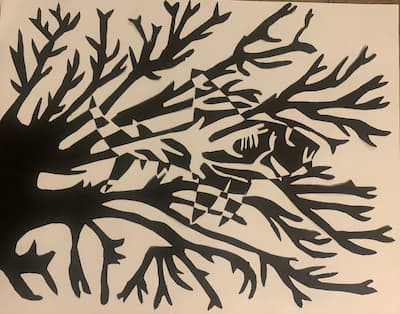

Image Hover Effect
This is the research section of my project. I went to different websites to understand the process behind images hover effects. In my README there's the citations of all the sites. In my opinion, the hover effects are one of the better aspects if not the best to get more in depth with. The various choices available are practically infinite, if you are creative you can spend lots of hours adding more style to your content. The first hover effect consist of blurring the image, using a filter, you select the option blur, you are able to select how long does it take and what level of pixels you want to blur the image. For this hover effect, I did my research at the website Brandsmen Marketing Agency, which provides guide of how to make websites more appealing by including effects on images that drives the attention of our eyes. Changing the image quality has to be one of the most unique features available to CSS code, the code is not that difficult for writing it in a code editor, however, I imagine that the process behind it has to be more complex. Changing its quality it's just one of the many features that can affect an image, there are also various guides to change its color, adding various filters to make the image look better.

CSS Code:
#blur div img:hover{
filter: blur(7px);
transition: 7s ease;
}
The second hover effect consists of an animation, in this case shaking. The way is works is by selecting how long you want the animation to last, then using keyframes, you select the different positions and displacements that the image will move to. For a shake animation to work, the image will have to have a minimal movement, then you select how many times does the animation repeat. In this code, the infinite option is selected, making the image continue shaking while the user is pointing at it. This concept was explored at the website w3schools which offers educational guides like guides for creating and editing websites. There were various guides there, I have always been interested in animation, investigating of the basics aspects of it was worth it to understand more about it. While the code for this one was the largest, I would say is the simplest since the code behind it focuses on changing the image position and degree of displacement, which is a basic for online animation.
CSS Code:
#shake div img:hover {
animation: shake 0.4s;,
animation-iteration-count: infinite;
}
@keyframes shake {
0% { transform: translate(1px, 1px) rotate(0deg); }
10% { transform: translate(-2px, -3px) rotate(-4deg); }
20% { transform: translate(-3px, 0px) rotate(3deg); }
30% { transform: translate(3px, 2px) rotate(0deg); }
40% { transform: translate(1px, -1px) rotate(3deg); }
50% { transform: translate(-1px, 2px) rotate(-4deg); }
60% { transform: translate(-3px, 1px) rotate(0deg); }
70% { transform: translate(3px, 1px) rotate(-4deg); }
80% { transform: translate(-1px, -1px) rotate(3deg); }
90% { transform: translate(1px, 2px) rotate(0deg); }
100% { transform: translate(2px, -3px) rotate(-4deg); }
}
The third hover effect is simpler. In this case it will make an illusion of turning the image into a a circular like form. This is done changing the transition of the image's border as well as its radius. I found the guide for accomplishing this is the website Foo Plugins, the website contains around 20 different hover effects. I found this one to be interesting and I wanted one that was different for the previous hover effects, since they were more about changing the image values, or the position, this one focuses more on changing the image's shape. I think this is an aspect that could be explore more in detail, for example, changing it to a difficult shape such as star, or in this image's case, a shark's shape could be interesting to attempt.
CSS Code:
#circle div img{
transition: border-radius 0.7s ease;
}
#circle div img:hover {
border-radius: 40%;
}